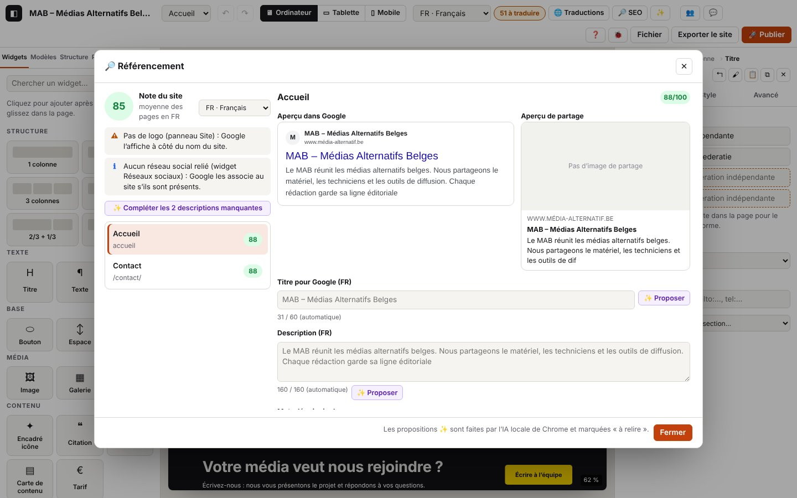

6. Référencement (SEO)

Sur cette page
- 6.1 Ouvrir le référencement et lire les notes
- 6.2 Régler titre, description, mot-clé, image de partage, noindex
- 6.3 Faire proposer description, titre et mots-clés par l'IA
- 6.4 Compléter toutes les descriptions d'une langue
- 6.5 Décrire les images sans texte alternatif
- 6.6 Aller à un point signalé
- Codes de ce chapitre
La fenêtre « 🔎 Référencement » note chaque page sur 100 pour Google, montre l'aperçu dans les résultats de recherche et sur les réseaux sociaux, liste les points à corriger, et fait proposer titres, descriptions, mots-clés et textes alternatifs par l'IA locale (chapitre 7).
Domaines du journal : seo.* (fenêtre, notes, champs, propositions appliquées, traitements en série) ; les appels à l'IA eux-mêmes sont dans ai.* (chapitre 7).
6.1 Ouvrir le référencement et lire les notes
But : savoir où en est le site et quelle page améliorer d'abord.
Étapes
- Barre du haut : « 🔎 SEO » (ou Ctrl+K « Référencement »).
- À gauche : la note du site (moyenne des pages dans la langue choisie), les points qui concernent tout le site, la liste des pages avec leur note.
- Clique sur une page ; change la langue analysée avec le menu à côté de la note.
Ce que tu vois : la note colorée (vert ≥ 85, orange ≥ 60, rouge en dessous), l'aperçu Google et l'aperçu de partage, la liste des points ✗ ⚠ • ℹ ✓.
Journal attendu (journaux/seo-ouvrir-regler.log)
Détails techniques : journal attendu
14:29:45.562 +4.41s DEBUG seo.analysis Analyse : page 88/100, site 85/100 {"pageId":"p_eplwyjrb","lang":"fr","page":88,"site":85,"points":{"good":2,"warn":2,"info":1},"sitePoints":{"warn":1,"info":1},"words":86,"imagesNoAlt":0}
…
14:29:45.573 +4.42s INFO seo.open Fenêtre Référencement : note du site 85/100 {"lang":"fr","pageId":"p_eplwyjrb","pages":2,"site":85,"page":88,"sitePoints":{"warn":1,"info":1},"pagePoints":{"good":2,"warn":2,"info":1},"missingDesc":2,"baseUrl":true}
14:29:45.663 +4.51s DEBUG seo.page Page choisie : /contact/ (88/100) {"pageId":"p_math7fl6","score":88,"lang":"fr"}
14:29:45.664 +4.51s DEBUG seo.analysis Analyse : page 88/100, site 85/100 {"pageId":"p_math7fl6","lang":"fr","page":88,"site":85,"points":{"good":2,"warn":2,"info":1},"sitePoints":{"warn":1,"info":1},"words":13,"imagesNoAlt":0}
…
14:29:45.725 +4.57s DEBUG seo.analysis Analyse : page 82/100, site 82/100 {"pageId":"p_math7fl6","lang":"fr","page":82,"site":82,"points":{"warn":3,"good":1,"info":1},"sitePoints":{"warn":1,"info":1},"words":13,"imagesNoAlt":0}
…
14:29:45.737 +4.58s DEBUG seo.analysis Analyse : page 82/100, site 82/100 {"pageId":"p_math7fl6","lang":"fr","page":82,"site":82,"points":{"warn":3,"good":1,"info":1},"sitePoints":{"warn":1,"info":1},"words":13,"imagesNoAlt":0}
…
14:29:45.934 +4.78s DEBUG seo.analysis Analyse : page 82/100, site 82/100 {"pageId":"p_math7fl6","lang":"fr","page":82,"site":82,"points":{"info":2,"warn":3,"good":1},"sitePoints":{"warn":1,"info":1},"words":13,"imagesNoAlt":0}
…
14:29:46.132 +4.98s DEBUG seo.analysis Analyse : page 82/100, site 82/100 {"pageId":"p_math7fl6","lang":"de","page":82,"site":82,"points":{"info":2,"warn":3,"good":1},"sitePoints":{"warn":1,"info":1},"words":13,"imagesNoAlt":0}
…
14:29:46.303 +5.15s DEBUG seo.analysis Analyse : page 82/100, site 82/100 {"pageId":"p_math7fl6","lang":"fr","page":82,"site":82,"points":{"info":2,"warn":3,"good":1},"sitePoints":{"warn":1,"info":1},"words":13,"imagesNoAlt":0}À vérifier : seo.open donne la note du site (site), celle de la page (page), le nombre de points par niveau (pagePoints, sitePoints : bad ✗, warn ⚠, tip •, info ℹ, good ✓), le nombre de descriptions manquantes (missingDesc) et si l'adresse du site est renseignée (baseUrl). Chaque nouvel affichage écrit seo.analysis (DEBUG) avec les mêmes compteurs, le nombre de mots et d'images sans texte alternatif.
Longueurs conseillées : elles dépendent de la langue analysée. Un caractère japonais occupe à peu près deux fois la largeur d'une lettre latine dans les résultats de Google et le japonais s'écrit sans espaces : les seuils japonais sont donc en caractères.
| Langue | Titre | Description | Texte de la page |
|---|---|---|---|
| fr, nl, de, en | 15 à 60 caractères | 70 à 160 caractères | au moins 150 mots |
| ja | 10 à 32 caractères | 80 à 120 caractères | au moins 300 caractères (sans espaces ni ponctuation) |
En japonais, le mot-clé est cherché sans tenir compte des espaces et de la pleine chasse ; un mot-clé en kana est comparé à l'adresse en rōmaji (チーム ↔ /chiimu/), un mot-clé en kanji n'est pas cherché dans l'adresse. Les liens vagues japonais (« こちら », « 詳しくはこちら », « もっと見る »…) sont signalés comme « cliquez ici ».
Variantes
| Situation | Ce qui change | Journal |
|---|---|---|
| Autre page | le détail change | seo.page (DEBUG) avec la note de la page |
| Autre langue analysée | notes et champs dans cette langue | seo.lang (DEBUG) {"from":"fr","to":"de"} puis seo.analysis avec "lang":"de" |
6.2 Régler titre, description, mot-clé, image de partage, noindex
But : écrire ce que Google affiche, et choisir les pages à ne pas montrer.
Étapes
- « Titre pour Google », « Description », « Mot-clé principal » : le compteur indique la longueur (titre : 60 caractères, description : 160) ; vide = automatique.
- « Image de partage » ; « Ne pas montrer cette page dans Google (noindex) ».
Ce que tu vois : l'aperçu Google se met à jour pendant la frappe ; la note est recalculée quand tu quittes le champ.
Journal attendu (même extrait)
Détails techniques : journal attendu
14:29:45.724 +4.57s DEBUG seo.field Champ « title » modifié (fr) {"pageId":"p_math7fl6","field":"title","lang":"fr","len":13}
…
14:29:45.728 +4.57s DEBUG seo.field Champ « title » modifié (fr) {"pageId":"p_math7fl6","field":"title","lang":"fr","len":13}
…
14:29:45.925 +4.77s DEBUG seo.field noindex activé {"pageId":"p_math7fl6","field":"noindex","value":true}
…
14:29:46.131 +4.97s DEBUG seo.lang Langue analysée : de {"from":"fr","to":"de"}
…
14:29:46.301 +5.14s DEBUG seo.lang Langue analysée : fr {"from":"de","to":"fr"}À vérifier : seo.field (DEBUG) donne la page, le champ (title, description, keyword, noindex, image), la langue et la longueur ; chaque frappe écrit aussi store.commit (regroupées en une étape d'annulation). La note qui baisse ici (88 → 82) est normale : un titre trop court est signalé.
Erreurs
| Situation | Message affiché | Journal | Que faire |
|---|---|---|---|
| Réglage refusé (page supprimée entre-temps, valeur invalide) | message d'erreur rouge | seo.apply-fail (WARN) avec la page, la langue et l'erreur | ferme et rouvre la fenêtre ; envoie le journal si ça se répète |
6.3 Faire proposer description, titre et mots-clés par l'IA
But : obtenir un premier jet, à relire.
Étapes
- « ✨ Proposer » à côté de la description ou du titre ; « ✨ Idées » à côté du mot-clé.
- Pour les mots-clés, clique sur une des idées pour la choisir.
Ce que tu vois : le champ se remplit ; « Description proposée (marquée « à relire ») ». Les textes proposés apparaissent dans le filtre « à relire » du tableau des traductions (chapitre 5).
Journal attendu (journaux/seo-ia-propositions.log)
Détails techniques : journal attendu
14:29:46.576 +5.42s DEBUG seo.ai-ask Proposition demandée : description {"kind":"description","pageId":"p_eplwyjrb","lang":"fr","sourceLang":"fr","inLen":584}
…
14:29:46.576 +5.42s INFO ai.description.start [ai.description#6] IA locale : description pour Google {"task":"seoDescription","title":"Accueil","inLen":584,"lang":"fr","sourceLang":"fr","gen":"fr","api":"summarizer","source":"test"}
14:29:46.577 +5.42s DEBUG ai.description.call [ai.description#6 · 1 ms] Appel Summarizer (fr) {"api":"summarizer","lang":"fr","type":"tldr","length":"short","context":"137 car.","inLen":584}
14:29:46.577 +5.42s DEBUG ai.description.reply [ai.description#6 · 1 ms] Réponse Summarizer : 124 car. en 0 ms {"api":"summarizer","ms":0,"outLen":124,"excerpt":"Le MAB fédère les médias alternatifs belges : matériel, tec…"}
14:29:46.577 +5.42s INFO ai.description.ok [ai.description#6 · 1 ms] Description pour Google : proposition prête (Summarizer) {"via":"summarizer","fallback":false,"translated":false,"calls":1,"outLen":124,"excerpt":"Le MAB fédère les médias alternatifs belges : matériel, tec…"}
…
14:29:46.583 +5.43s INFO seo.ai-applied Description de l’IA appliquée (marquée « à relire ») {"kind":"description","pageId":"p_eplwyjrb","lang":"fr","len":124,"via":"summarizer","translated":false}
…
14:29:46.641 +5.49s DEBUG seo.ai-ask Proposition demandée : keywords {"kind":"keywords","pageId":"p_eplwyjrb","lang":"fr","sourceLang":"fr","inLen":584}
…
14:29:46.643 +5.49s DEBUG ai.keywords.cleaned [ai.keywords#1 · 1 ms] Mots-clés : 4 proposés, 3 gardés (doublons, 5 au plus) {"got":4,"kept":3}
14:29:46.643 +5.49s INFO ai.keywords.ok [ai.keywords#1 · 1 ms] Mots-clés : proposition prête (Prompt API) {"via":"prompt","fallback":false,"translated":false,"calls":1,"keywords":3,"sample":["médias alternatifs","radio associative","fédération des médias"]}
14:29:46.643 +5.49s INFO seo.ai-applied 3 idée(s) de mots-clés affichée(s) {"kind":"keywords","pageId":"p_eplwyjrb","lang":"fr","count":3,"translated":false}
…
14:29:46.692 +5.54s DEBUG seo.keyword-pick Mot-clé choisi parmi les idées {"pageId":"p_eplwyjrb","lang":"fr","keyword":"médias alternatifs"}
…
14:29:46.942 +5.79s DEBUG seo.ai-ask Proposition demandée : title {"kind":"title","pageId":"p_eplwyjrb","lang":"fr","sourceLang":"fr","inLen":584}
…
14:29:46.944 +5.79s INFO ai.title.ok [ai.title#3 · 1 ms] Titre pour Google : proposition prête (Prompt API) {"via":"prompt","fallback":false,"translated":false,"calls":1,"outLen":46,"excerpt":"MAB – fédération des médias alternatifs belges"}
…
14:29:46.949 +5.79s INFO seo.ai-applied Titre de l’IA appliqué (marqué « à relire ») {"kind":"title","pageId":"p_eplwyjrb","lang":"fr","len":46,"translated":false}À vérifier : pour chaque bouton, seo.ai-ask (ce qui est demandé, longueur du texte de la page inLen), le parcours ai.description / ai.keywords / ai.title (chapitre 7 : API utilisée, réponse), puis seo.ai-applied (INFO) avec la longueur du texte appliqué et translated. Un mot-clé choisi écrit seo.keyword-pick.
Variantes
| Situation | Ce qui change | Journal |
|---|---|---|
| Langue néerlandaise | l'IA rédige en français puis traduit | ai.description.via-translation, puis seo.ai-applied avec "translated":true |
| Proposition trop longue | coupée à 160 caractères (description) ou 60 (titre) | ai.description.clamped (WARN) (chapitre 7) |
| Description courte (moins de 70 caractères) | le message le signale | ai.description.warning (WARN), seo.ai-applied avec warning |
Erreurs : voir chapitre 7 (IA absente, réponse illisible, exception) ; dans tous les cas rien n'est écrit dans le site et aucune ligne seo.ai-applied n'apparaît.
6.4 Compléter toutes les descriptions d'une langue
But : remplir d'un coup les descriptions manquantes (ou automatiques) de toutes les pages.
Étapes
- Choisis la langue analysée (ex. NL).
- « ✨ Compléter les 2 descriptions manquantes ».
Ce que tu vois : une notification par page, puis « 2 descriptions proposées en NL (à relire…) ».
Journal attendu (journaux/seo-completer-nl.log)
Détails techniques : journal attendu
14:29:47.042 +5.89s INFO seo.complete-all.start [seo.complete-all#1] Compléter les descriptions en nl : 2 page(s) {"lang":"nl","pages":2,"ids":["p_eplwyjrb","p_math7fl6"]}
…
14:29:47.043 +5.89s INFO ai.description.start [ai.description#7] IA locale : description pour Google {"task":"seoDescription","title":"Accueil","inLen":584,"keyword":"médias alternatifs","lang":"nl","sourceLang":"fr","gen":"fr","api":"summarizer","translateTo":"nl","source":"test"}
14:29:47.043 +5.89s INFO ai.description.via-translation [ai.description#7 · 0 ms] Gemini Nano ne parle pas nl : rédaction en fr, puis traduction sur l’appareil {"gen":"fr","to":"nl","translator":true}
…
14:29:47.043 +5.89s INFO ai.description.ok [ai.description#7 · 0 ms] Description pour Google : proposition prête (Summarizer, traduite en nl) {"via":"summarizer","fallback":false,"translated":true,"calls":2,"outLen":129,"excerpt":"[nl] Le MAB fédère les médias alternatifs belges : matériel…"}
…
14:29:47.050 +5.89s DEBUG seo.complete-all.page [seo.complete-all#1 · 8 ms] Description appliquée : accueil {"pageId":"p_eplwyjrb","len":129,"translated":true}
…
14:29:47.051 +5.89s INFO ai.description.start [ai.description#8] IA locale : description pour Google {"task":"seoDescription","title":"Contact","inLen":99,"lang":"nl","sourceLang":"fr","gen":"fr","api":"summarizer","translateTo":"nl","source":"test"}
14:29:47.051 +5.89s INFO ai.description.via-translation [ai.description#8 · 0 ms] Gemini Nano ne parle pas nl : rédaction en fr, puis traduction sur l’appareil {"gen":"fr","to":"nl","translator":true}
…
14:29:47.053 +5.90s INFO ai.description.ok [ai.description#8 · 2 ms] Description pour Google : proposition prête (Summarizer, traduite en nl) {"via":"summarizer","fallback":false,"translated":true,"calls":2,"outLen":129,"excerpt":"[nl] Le MAB fédère les médias alternatifs belges : matériel…"}
…
14:29:47.058 +5.90s DEBUG seo.complete-all.page [seo.complete-all#1 · 16 ms] Description appliquée : /contact/ {"pageId":"p_math7fl6","len":129,"translated":true}
14:29:47.058 +5.90s INFO seo.complete-all.ok [seo.complete-all#1 · 16 ms] 2 description(s) proposée(s) sur 2 {"done":2,"pages":2,"lang":"nl"}À vérifier : seo.complete-all.start avec le nombre de pages et leurs identifiants ; pour chacune un parcours ai.description puis seo.complete-all.page ; seo.complete-all.ok avec done / pages et la durée totale.
Erreurs
| Situation | Message affiché | Journal | Que faire |
|---|---|---|---|
| L'IA échoue ou est absente sur une page | le message de l'IA, puis « 0 description proposée » | ai.description.absent (ou ai.description.fail), seo.complete-all.stopped (WARN) avec la page et le nombre déjà fait, puis seo.complete-all.ok | règle l'IA (chapitre 7) et relance : seules les pages manquantes sont reprises |
| Erreur imprévue pendant la boucle | message d'erreur | seo.complete-all.fail (ERROR) | envoie le journal |
Détails techniques : journal attendu
14:29:47.159 +6.00s INFO seo.complete-all.start [seo.complete-all#2] Compléter les descriptions en de : 2 page(s) {"lang":"de","pages":2,"ids":["p_eplwyjrb","p_math7fl6"]}
…
14:29:47.160 +6.00s WARN ai.description.absent [ai.description#9 · 1 ms] IA absente : IA locale indisponible : ouvrez ✨ IA locale pour l’activer (Chrome 148 ou plus récent, sur ordinateur). {"has":{},"need":"prompt"}
14:29:47.160 +6.00s INFO ai.description.cancel [ai.description#9 · 1 ms] Tâche non lancée (aucun appel au modèle) {"task":"seoDescription"}
…
14:29:47.160 +6.00s WARN seo.complete-all.stopped [seo.complete-all#2 · 1 ms] Arrêt après 0 page(s) : l’IA a échoué (voir ai.description ci-dessus) {"pageId":"p_eplwyjrb","done":0}
14:29:47.161 +6.00s INFO seo.complete-all.ok [seo.complete-all#2 · 2 ms] 0 description(s) proposée(s) sur 2 {"done":0,"pages":2,"lang":"de"}6.5 Décrire les images sans texte alternatif
But : donner un texte alternatif (lu par les lecteurs d'écran et par Google) à toutes les images d'une page.
Étapes
- Quand la page a des images sans texte alternatif : « ✨ Décrire les N images sans texte alternatif ».
Ce que tu vois : « 1 texte alternatif proposé (à relire). » ; la note monte (ici 73 → 88).
Journal attendu (journaux/seo-alts.log)
Détails techniques : journal attendu
14:29:44.686 +3.53s DEBUG seo.analysis Analyse : page 73/100, site 78/100 {"pageId":"p_eplwyjrb","lang":"fr","page":73,"site":78,"points":{"good":2,"warn":2,"bad":1,"info":1},"sitePoints":{"warn":1,"info":1},"words":86,"imagesNoAlt":1}
…
14:29:44.771 +3.62s INFO seo.alts.start [seo.alts#1] Textes alternatifs manquants : 1 image(s) {"pageId":"p_eplwyjrb","lang":"fr","images":1}
…
14:29:44.785 +3.63s INFO ai.alt.start [ai.alt#1] IA locale : texte alternatif d’une image {"task":"altText","image":"image/png (0 Ko)","context":310,"lang":"fr","sourceLang":"fr","gen":"fr","api":"prompt","source":"test"}
14:29:44.785 +3.63s DEBUG ai.alt.call [ai.alt#1 · 0 ms] Appel Prompt API (Gemini Nano) (fr) {"api":"prompt","lang":"fr","schema":"alt,decorative","images":1,"system":"306 car.","inLen":351}
…
14:29:44.787 +3.63s DEBUG ai.alt.cleaned [ai.alt#1 · 2 ms] Proposition nettoyée (guillemets, balises, préfixe « Image de »…) {"before":"Image de une équipe de tournage avec une caméra","after":"Une équipe de tournage avec une caméra"}
14:29:44.787 +3.63s INFO ai.alt.ok [ai.alt#1 · 2 ms] Texte alternatif : proposition prête (Prompt API) {"via":"prompt","fallback":false,"translated":false,"calls":1,"outLen":38,"excerpt":"Une équipe de tournage avec une caméra"}
…
14:29:44.801 +3.65s DEBUG seo.alts.image [seo.alts#1 · 30 ms] Texte alternatif appliqué {"nodeId":"n_6j2j5p1w24","len":38}
14:29:44.801 +3.65s INFO seo.alts.ok [seo.alts#1 · 30 ms] 1 texte(s) alternatif(s) proposé(s) sur 1 {"done":1,"images":1,"skipped":0}
…
14:29:44.804 +3.65s DEBUG seo.analysis Analyse : page 88/100, site 85/100 {"pageId":"p_eplwyjrb","lang":"fr","page":88,"site":85,"points":{"good":2,"warn":2,"info":1},"sitePoints":{"warn":1,"info":1},"words":86,"imagesNoAlt":0}À vérifier : seo.alts.start avec le nombre d'images ; pour chacune ai.alt.* (avec "images":1 dans ai.alt.call : l'image est bien donnée au modèle) et seo.alts.image ; seo.alts.ok avec done, images et skipped (images sans fichier).
Erreurs
| Situation | Message affiché | Journal | Que faire |
|---|---|---|---|
| Image en ligne (https://) illisible | « Image en ligne inaccessible : importez-la dans le projet… » | ai.image-fail (WARN), seo.alts.stopped (WARN) | importe l'image dans le projet (chapitre 4) |
| IA sans lecture d'images | « L'IA locale de ce navigateur ne lit pas encore les images » | ai.alt.absent, seo.alts.stopped | voir chapitre 7 (Prompt API multimodale) |
| Erreur imprévue | message d'erreur | seo.alts.fail (ERROR) | envoie le journal |
6.6 Aller à un point signalé
But : corriger directement l'élément concerné (image sans texte alternatif, titre manquant…).
Étapes : clique « Aller à » à côté du point.
Ce que tu vois : la fenêtre se ferme, la page s'ouvre et l'élément est sélectionné.
Journal attendu (journaux/seo-aller-a.log)
Détails techniques : journal attendu
14:29:47.458 +6.30s DEBUG seo.goto Aller à l’élément signalé (img-alt) {"check":"img-alt","pageId":"p_eplwyjrb","nodeId":"n_6j2j5p1w24"}
…
14:29:47.710 +6.55s DEBUG store.select Sélection : image {"id":"n_6j2j5p1w24","type":"image"}Codes de ce chapitre
| Code | Niveau | Sens |
|---|---|---|
seo.ai-applied | INFO | proposition de l'IA appliquée (description, titre) ou idées de mots-clés affichées |
seo.ai-ask | DEBUG | proposition demandée à l'IA (quoi, page, langue, longueur du texte) |
seo.alts.start, seo.alts.ok, seo.alts.fail | INFO / INFO / ERROR | « Décrire les images » : début (nombre d'images), fin (done, skipped), échec |
seo.alts.image | DEBUG | texte alternatif appliqué à une image |
seo.alts.stopped | WARN | arrêt après un échec de l'IA |
seo.analysis | DEBUG | analyse affichée : notes, points par niveau, mots, images sans texte alternatif |
seo.apply-fail | WARN | réglage de référencement refusé |
seo.complete-all.start, seo.complete-all.ok, seo.complete-all.fail | INFO / INFO / ERROR | « Compléter les descriptions » d'une langue |
seo.complete-all.page | DEBUG | description appliquée à une page |
seo.complete-all.stopped | WARN | arrêt après un échec de l'IA |
seo.field | DEBUG | champ modifié (titre, description, mot-clé, noindex, image) |
seo.goto | DEBUG | « Aller à » un point signalé |
seo.keyword-pick | DEBUG | mot-clé choisi parmi les idées |
seo.lang | DEBUG | langue analysée changée |
seo.open | INFO | fenêtre ouverte : note du site, de la page, points par niveau |
seo.page | DEBUG | page choisie |